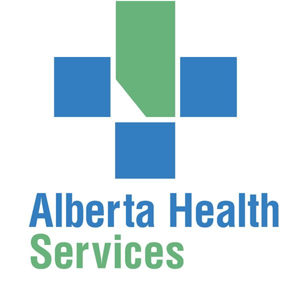
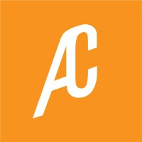

 Software Developer Coop
Alberta Health Services
January 2023 - Present
Edmonton, Alberta, Canada
- Developing web-based applications for CTC and PEAS projects using ASP.NET, OOP C#, and MVC designs in Clinical Services Software Development team.
- Streamlining PEAS project's database design, reducing data redundancy by 30% using MS SQL Server.
- Utilizing design patterns to reduce code duplication by 26%.
- Contributing to development of user-friendly web-based interface for CTC project, resulting in 40% increase in user adoption and satisfaction using Bootstrap and JavaScript.
- Profiling and optimizing SQL queries to improve database performance, reducing query execution times by 37%.
- Managing source control using Azure TFS to ensure code quality and version control.
 Data Science Student Intern
Data Science Student Intern
University of Calgary
May 2022 - August 2022
Calgary, Alberta, Canada
- Collaborated with 1 supervisor and 2 post- doctorate students in VISAAG Lab to analyse the trajectory of Covid 19 in Canada
- Acquired 10,000+ data from different websites by python web scrapping using Pandas.
- Automated the data collecting process in GitLab repository by executing .gitlab-ci.yml file which improved the efficiency by 30%.
- Incorporated Python in Tableau Prep , which saved 50 minutes of work every day.
- Optimized the raw data cleaning code by publishing the data source to Tableau Server directly.
- Visualized the processed data through graphs in Tableau and R which improved analytical insights by 27 percent.
- Published interactive analytics and visualizations in a frontend webpage built with HTML and CSS
 Software Team Member
AC Robotics
January 2022 - April 2022
Calgary, Alberta, Canada
- Worked with Electrical and Mechanical Team Members to build miniature robots like robocup, sumo bots to compete in Small Size League (SSL).
- Performed research into the design, operation, and performance of robotic mechanism systems.
- Collaborated with Geomatics Team to program robots that effectively use sensors during combat and debugged for automatic running.
- Wrote and executed test plans for autonomous vehicles as needed for my own code and as requested by others.